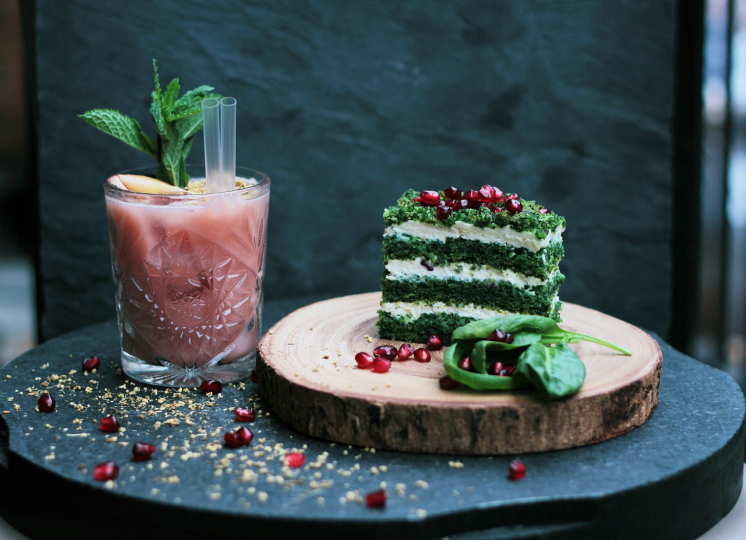
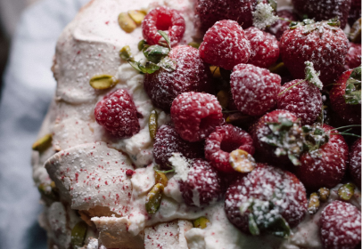

團隊甜點創作靈感
甜點有時候不只是食物，它是我們記憶的延續，是愛與溫暖的載體
Jessica
2024/9/22
經典巧克力草莓馬卡龍融入了個人獨特的創新元素。外表看似平凡無奇，卻隱藏著令人驚喜的美味秘密。輕輕咬下一口，濃郁的巧克力香氣與草莓的酸甜交織在一起，馬卡龍殼的酥脆與內餡的柔滑在口中綻放出多層次的絕妙口感。這樣的組合突破了傳統的味道界限，無論是口感還是風味都充滿了驚喜與變化，瞬間俘獲了無數甜點愛好者的心。這款創新馬卡龍不僅是對經典風味的致敬，更是一次對味覺的全新探索，讓每一口都成為一段難忘的美味旅程。

團隊甜點創作靈感
從家傳秘方到創新美味的轉變
Jessica
2024/9/22
甜點不僅是舌尖上的享受，更是一段段動人的情感故事。在這個專欄中，我們將為你細細講述那些隱藏在甜點背後的故事與情感，從愛情的巧克力慕斯到充滿兒時回憶的奶酪蛋糕，每一篇文章都是一首為甜點而作的詩歌，讓甜點與情感完美交織。

顧客甜點故事投稿
翻開舊食譜,尋找新靈感的旅程
Jessica
2024/9/22
穿越時光，品味甜蜜。這個專欄帶你探索從經典法式甜點到現代創意甜品的轉變過程，揭開每道甜點背後的歷史與故事。無論是歷久不衰的拿破崙千層酥，還是帶著創新風味的草莓奶油泡芙，每一道甜品都充滿著動人的故事與傳統的韻味。

主題專欄
甜點潮流誌：創新美味的極致探索
Jessica
2024/9/22
與我們一起探索甜點世界的最新潮流與風尚！在這個專欄中，我們將介紹世界各地最前衛的甜點創作，從分子料理的魔法變幻，到令人驚艷的健康甜品配方，帶你發現甜點藝術的無限可能。無論你是甜點愛好者還是創作高手，這裡將激發你無窮的創作靈感與味蕾的冒險精神。